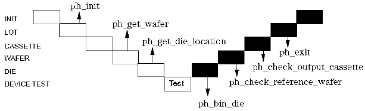

The application model file
The application model used to run a wafer prober according to the scenario described in the previous section, could be accomplished by a structure similar to that shown in the figure below. Also shown are the points where the prober driver routines are executed.

The various levels are,
init |
where any initializations are performed that are valid for all of the test; for example, entering the temperature. |
lot |
as the wafer-cassettes will undoubtedly be arranged in lots or batches, this is the second highest level. The wafer prober is also initialized in this level. |
cassette |
on this level the operator would typically give the id's for each cassette. |
wafer |
on this level instructions are sent to the wafer prober, to load and unload wafers. |
die |
on this level, the software gets the die location from the prober and uses it for moving to the next die, binning information, data logging and for displaying the wafermap. |
For the syntax for this application, see Syntax Listing.